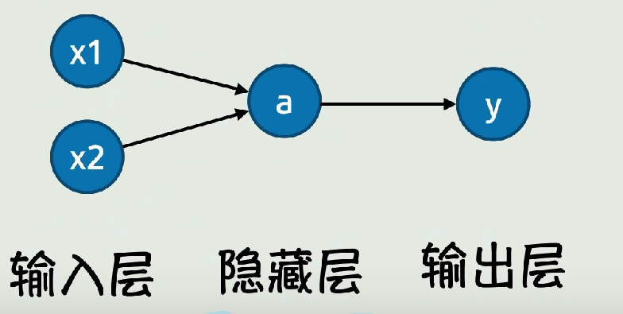
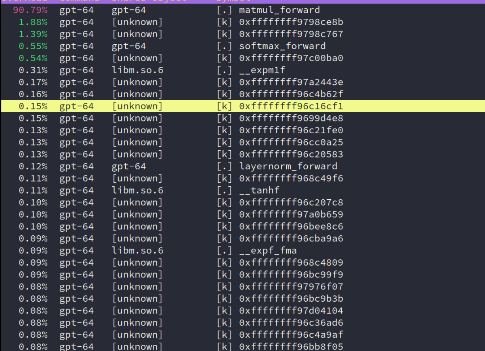

M3
Introduction
由于开始的时间比较晚，在老师的 wiki 上无法下载 gpt.c 的 model 文件，所以网上找。
Basic knowledge of AI
由于自己不像南大的学生可能在上 OS 课前就有 AI 相关的基础，所以这部分我根据老师推荐的学习资料和 LLM 来一步步学习相关概念，当然只是大概过一遍内容。
首先，
gpt.c的源代码就是最好的老师！它实现了对神经网络的 “真正数学严格” 的描述——如果我们看 PyTorch 的代码，其中会涉及许多内置的算子，你对其中的实现其实并不 100% 理解——但对于 C 代码这种语义 “扁平” 的语言来说，你真的可以完全理解它！此外，我们给一个外链，也还推荐 Understanding Deep Learning。当然，老师上面给出的一些学习资料也很不错！
加上之前偶然刷到的视频：从函数到神经网络【白话DeepSeek01】 和 Neural network (machine learning)，应该能简单了解。最后再看看神经网络中的相关概念是怎么对应 C 代码实现。
overview
一、神经元
神经元是神经网络的基本组成单元，它模拟了生物神经元的行为。一个简单的神经元模型由以下部分组成：
- 输入连接 ：接收来自其他神经元或输入数据的信号。
- 权重 ：每个输入连接都有一个权重，表示该输入对神经元输出的重要性。
- 偏置 ：一个常数，用于调整神经元的激活阈值。
- 激活函数 ：对神经元的加权输入进行非线性变换，以决定神经元是否被激活。
神经元的输出 y 的数学表达式： $$ y = \sigma\left( \sum_{i=1}^{n} w_i x_i + b \right) \
x_i 是输入，w_i 是权重，b 是偏置，\sigma 是激活函数 $$
二、激活函数
激活函数是神经元中用于引入非线性的关键组件，它使得神经网络能够学习复杂的模式和特征。常见的激活函数有：
-
Sigmoid 函数
-
数学表达式 ： $$ \sigma(x) = \frac{1}{1 + e^{-x}} $$
-
特点 ：输出范围在 (0,1) 之间，可以将任意实数值映射到 0 和 1 之间，常用于二分类问题。然而，Sigmoid 函数在输入较大或较小时会出现梯度饱和问题，导致训练速度变慢。
-
应用场景 ：适用于二分类任务的输出层，也可用于某些需要将输出限制在 0 到 1 之间的中间层。
-
ReLU函数（Rectified Linear Unit） -
数学表达式 ： $$ \text{ReLU}(x) = \max(0, x) $$
-
特点 ：当输入大于 0 时，输出等于输入；当输入小于等于 0 时，输出为 0。计算简单，能有效缓解梯度消失问题，但在输入小于 0 时梯度为 0，可能导致部分神经元 “死亡”。
-
应用场景 ：广泛应用于卷积神经网络（CNN）和多层感知机（MLP）等的隐藏层。
-
tanh 函数
-
数学表达式 ： $$ \tanh(x) = \frac{e^{x} - e{-x}}{e{x} + e^{-x}} $$
-
特点 ：输出范围在 (-1,1) 之间，是非线性函数，能够将输入数据归一化到 -1 到 1 的区间。相比 Sigmoid 函数，tanh 函数的输出均值更接近 0，有助于加快收敛速度，但也存在梯度饱和问题。
-
应用场景 ：常用于循环神经网络（RNN）和某些需要将输出限制在 -1 到 1 之间的场景。
-
GELU 函数（Gaussian Error Linear Unit）
-
数学表达式 ： $$ \text{GELU}(x) = x \cdot \Phi(x)，\ \Phi(x) 是标准正态分布的累积分布函数。 $$
-
特点 ：结合了
ReLU和线性函数的优点，具有更好的非线性拟合能力，在 Transformer 模型中被广泛使用。 -
应用场景 ：适用于 Transformer 架构的神经网络，特别是在自然语言处理任务中。
-
Softmax函数 -
数学表达式 ：
对于输入向量： $$ z = [z_1, z_2, ..., z_n] $$
Softmax函数的输出为： $$ \text{Softmax}(z_i) = \frac{e{z_i}}{\sum_{j=1}{n} e^{z_j}} \ (i = 1, 2, ..., n) $$ -
特点 ：将一组实数值转换为概率分布，使得所有输出值的和为 1，常用于多分类问题的输出层。
-
应用场景 ：主要用于多分类任务的输出层，将神经网络的输出转换为各类别的概率。
-
Leaky ReLU函数 -
数学表达式 ： $$ \text{Leaky ReLU}(x) = \begin{cases} x, & x > 0 \ \alpha x, & x \leq 0 \end{cases} \ \alpha 是一个较小的正数，如 0.01 $$
-
特点 ：在输入小于 0 时，输出为 αx ，避免了
ReLU函数中部分神经元 “死亡” 的问题，同时保留了ReLU函数在输入大于 0 时的线性特性。 -
应用场景 ：适用于需要解决
ReLU函数 “死亡” 问题的神经网络隐藏层。 -
ELU 函数（Exponential Linear Unit）
-
数学表达式： $$ \text{ELU}(x) = \begin{cases} x, & x > 0 \ \alpha (e^{x} - 1), & x \leq 0 \end{cases} \ \alpha 是一个正数 $$
-
特点 ：在输入小于 0 时，输出为 (\alpha (e^{x} - 1))，能够平滑地过渡到负值，有助于缓解梯度消失问题，同时避免了神经元 “死亡” 现象。
-
应用场景 ：适用于需要更好收敛性能和避免神经元 “死亡” 的神经网络隐藏层。
三、神经网络的结构
一个典型的神经网络由以下几层组成：
-
输入层
负责接收输入数据，其神经元数量通常与输入特征的维度一致。
-
隐藏层
位于输入层和输出层之间的层，可以有多个隐藏层，每个隐藏层包含一定数量的神经元。隐藏层通过非线性激活函数对输入数据进行特征提取和变换。
-
输出层
产生神经网络的最终输出结果，其神经元数量取决于任务的类型，例如在分类任务中，输出层神经元数量通常与类别数一致。
直接配图，当然实际情况更加复杂！

四、矩阵运算在神经网络中的应用
在神经网络中，矩阵运算是高效实现神经元计算的关键。
例如，对于一个包含多个神经元的层，我们可以将输入数据、权重和偏置表示为矩阵和向量，然后通过矩阵乘法和加法运算快速计算出该层所有神经元的输出。
假设输入数据为一个 (m \times n) 的矩阵 (X)（表示有 (m) 个样本，每个样本有 (n) 个特征），权重矩阵为一个 (n \times p) 的矩阵 (W)（表示从输入层到隐藏层的连接权重，隐藏层有 (p) 个神经元），偏置向量为一个 (1 \times p) 的向量 (b)，则隐藏层的输出矩阵 (H) 可以通过以下矩阵运算得到：
$$ H = \sigma(X \cdot W + b) \ \sigma 表示逐元素应用激活函数。 $$
五、层归一化（Layer Normalization）
层归一化是一种对神经网络中间层的输出进行归一化的技术，旨在稳定网络的训练过程和提高收敛速度。它通过对每个样本在每个神经元上的输出进行归一化，使得这些输出具有零均值和单位方差，然后通过学习的参数进行缩放和平移操作。
对于输入数据 (x)，层归一化的输出 y 数学表达计算如下： $$ y = \gamma \cdot \frac{x - \mu}{\sqrt{\sigma^2 + \epsilon}} + \beta \ \mu 和\sigma^2 分别是输入数据在该层神经元上的均值和方差 \ \gamma 和 \beta 是学习的缩放和平移参数 \ \epsilon 是为了避免除零的微小常数。 $$
六、注意力机制（Attention）
注意力机制是现代神经网络，特别是 Transformer 模型中的核心组件之一。它允许模型在处理序列数据时，能够动态地关注序列中的不同位置，从而更好地捕捉序列中的长期依赖关系。
- 自注意力（Self-Attention）
自注意力机制通过计算序列中每个位置的查询向量（Query）、键向量（Key）和值向量（Value）之间的相似度，来确定每个位置应该关注的其他位置的程度。具体步骤如下：
- 生成 Q、K、V 向量 ：对输入序列中的每个元素，通过线性变换生成查询向量 (Q)、键向量 (K) 和值向量 (V)。
- 计算注意力分数 ：通过 (Q) 和 (K) 的点积计算注意力分数，表示每个位置之间的相关性。
- 缩放和
softmax操作 ：将注意力分数除以键向量维度的平方根进行缩放，然后应用softmax函数得到注意力权重，这些权重表示每个位置应该分配多少关注给其他位置。 - 加权求和 ：将注意力权重与对应的值向量进行加权求和，得到最终的输出。
七、软件最大值函数（Softmax）
Softmax 函数常用于神经网络的输出层，特别是在多分类问题中。它将一组实数值转换为概率分布，使得所有输出值的和为 1。
对于输入向量
$$
z = [z_1, z_2, ..., z_n]
$$
Softmax 函数的输出为：
$$
\text{Softmax}(z_i) = \frac{e{z_i}}{\sum_{j=1}{n} e^{z_j}}\
(i = 1, 2, ..., n) $$
八、残差连接（Residual Connection）
残差连接是一种网络结构设计，它通过将输入直接加到输出上，形成一个残差块。这种设计有助于缓解深度神经网络中的梯度消失问题，使得网络能够更容易地训练更深的层次。
残差块的输出 (y) 的数学表达：
$$ y = F(x) + x\ x 是输入，F(x) 是残差块中的主路径网络结构的输出。 $$
九、Transformer 模型概述
Transformer 模型是一种基于自注意力机制的神经网络架构，广泛应用于自然语言处理任务中，如机器翻译、文本生成等。它主要由以下组件构成：
- 编码器（Encoder） ：对输入序列进行编码，提取特征表示。
- 解码器（Decoder） ：根据编码器的输出和之前的解码结果生成输出序列。
- 自注意力层（Self-Attention Layer） ：在编码器和解码器中都使用，用于捕捉序列中的依赖关系。
- 前馈神经网络（Feed-Forward Neural Network） ：对每个位置的特征进行非线性变换。
十、GPT-2 模型简介
GPT-2 是一种基于 Transformer 架构的预训练语言模型，它通过在大规模文本数据上进行无监督预训练，学习到了丰富的语言知识和语义信息。GPT-2 主要由多个 Transformer 解码器层堆叠而成，每个解码器层包含自注意力机制和前馈神经网络。在实际应用中，可以通过微调 GPT-2 模型来适应特定的自然语言处理任务，如文本生成、问答系统等。
Usage of Tools
主要是 perf。先借助 LLM 给出使用总结：
以下是perf的基本使用方法总结：
基础用法
- 安装perf：大多数Linux发行版都自带perf工具，通常作为
perf包提供。如果没有安装，可以通过包管理器安装，例如在Ubuntu上可以使用sudo apt-get install linux-tools-generic命令。- 启动perf记录：使用
perf record命令来记录程序的性能数据。例如，perf record ./your_program会记录your_program运行时的性能事件。- 停止perf记录：在记录过程中，可以按
Ctrl+C组合键来停止记录。- 查看perf报告：使用
perf report命令来查看记录的性能数据报告。常见使用场景
- 性能分析：使用
perf top命令可以实时查看系统中各个进程的性能事件统计，类似于top命令。- 事件监测：perf可以监测多种性能事件，如CPU周期、缓存引用、分支指令等。可以通过
perf stat命令来获取这些事件的统计信息。- 系统资源监控：使用
perf record -e sched:sched_switch -a可以记录系统中进程调度切换的事件，帮助分析系统资源的使用情况。示例
- 记录并分析程序性能：
perf record ./your_program perf report- 实时查看性能事件统计：
perf top- 监测特定性能事件：
perf stat -e cycles,instructions ./your_program
由此得出我的性能瓶颈：

lab
好的！既然你希望从零开始理解神经网络的基础知识，并通过分析 gpt.c 的源码来学习，我会用 分层递进 的方式，结合代码实例和核心概念，帮助你建立完整的知识框架。以下是学习路径：
第一阶段：神经网络基础概念
1. 神经元与激活函数
- 神经元：模拟生物神经元，接收输入信号，加权求和后通过激活函数输出。
- 激活函数：决定神经元是否被激活（如
ReLU,Sigmoid,GELU）。 - 代码示例：
gpt.c中的gelu_forward函数：void gelu_forward(float* out, float* inp, int N) { for (int i = 0; i < N; i++) { float x = inp[i]; float cube = 0.044715f * x * x * x; out[i] = 0.5f * x * (1.0f + tanhf(GELU_SCALING_FACTOR * (x + cube))); } }- 作用：对输入
inp的每个元素应用 GELU 激活函数，结果存入out。
- 作用：对输入
2. 矩阵运算（Matrix Operations）
- 权重矩阵：神经网络的参数，用于线性变换。
- 矩阵乘法：神经网络的核心计算（如全连接层）。
- 代码示例：
matmul_forward函数：// 输入 inp (B,T,C), 权重 weight (OC,C), 输出 out (B,T,OC) for (int o = 0; o < OC; o++) { float val = bias[o]; for (int i = 0; i < C; i++) { val += inp_bt[i] * weight[o*C + i]; // 点积运算 } out_bt[o] = val; }- 作用：将输入向量与权重矩阵相乘，得到输出。
3. 前向传播（Forward Propagation）
- 过程：输入数据从输入层逐层计算到输出层。
- 代码体现：
gpt2_forward函数中的逐层调用（如encoder_forward,layernorm_forward）。
第二阶段：理解 gpt.c 的代码结构
1. 模型参数（ParameterTensors）
- 存储权重：如
wte（词嵌入矩阵）、wpe（位置编码矩阵）。 - 代码结构：
typedef struct { float* wte; // (V, C) float* wpe; // (maxT, C) float* ln1w; // LayerNorm 的权重 // ... 其他参数 } ParameterTensors;
2. 激活与中间结果（ActivationTensors）
- 存储中间值：如
encoded（编码后的输入）、att（注意力分数）。typedef struct { float* encoded; // (B, T, C) float* ln1; // LayerNorm 后的结果 // ... 其他激活 } ActivationTensors;
3. 核心函数解析
- 编码层：
encoder_forward - 输入：Token ID → 查表得到词嵌入（
wte）和位置编码（wpe）。 -
代码逻辑：
// 将 token 和位置编码相加 for (int i = 0; i < C; i++) { out_bt[i] = wte_ix[i] + wpe_t[i]; } -
注意力机制：
attention_forward - 步骤：计算 Query、Key、Value → 计算注意力分数 → Softmax → 加权求和。
- 代码关键点：
// 计算 Query 和 Key 的点积 for (int i = 0; i < hs; i++) { val += query_t[i] * key_t2[i]; }
第三阶段：从代码看神经网络细节
1. 层归一化（LayerNorm）
- 作用：对每个样本的特征进行归一化，加速训练。
- 代码实现：
layernorm_forward函数：// 计算均值和方差 for (int i = 0; i < C; i++) { m += x[i]; } m = m / C; // 归一化并缩放 for (int i = 0; i < C; i++) { float n = (s * (x[i] - m)); out_bt[i] = n * weight[i] + bias[i]; }
2. 残差连接（Residual Connection）
- 作用：缓解梯度消失，允许深层网络训练。
- 代码体现：
residual_forward函数：for (int i = 0; i < N; i++) { out[i] = inp1[i] + inp2[i]; // 输入 + 输出 }
第四阶段：并行化思路分析
1. 找到计算热点
- 时间分析：使用 Profiler（如
perf）发现matmul_forward和attention_forward是性能瓶颈。
2. 矩阵乘法的并行化
- 策略：将输出通道（
OC）分块，每个线程处理一部分。 - 代码修改：
// 原始代码（串行） for (int o = 0; o < OC; o++) { // 计算每个输出通道 } // 并行化：每个线程处理 OC/NUM_THREADS 个通道 void matmul_worker(int o_start, int o_end) { for (int o = o_start; o < o_end; o++) { // 计算部分通道 } }
3. 注意力机制的并行化
- 策略：将注意力头（
NH）分给不同线程。 - 代码修改：
// 原始代码（串行处理每个头） for (int h = 0; h < NH; h++) { // 计算单个头的注意力 } // 并行化：每个线程处理 NH/NUM_THREADS 个头 void attention_worker(int h_start, int h_end) { for (int h = h_start; h < h_end; h++) { // 计算部分头 } }
第五阶段：学习建议
1. 动手实践
- 修改代码：尝试在
matmul_forward中添加printf打印中间结果，观察数据流。 - 简化模型：将
gpt.c的层数减少到 1 层（修改L），逐步调试。
2. 扩展学习
- 推荐资源：
- 书籍：《深度学习入门：基于 Python 的理论与实现》
- 课程：吴恩达《深度学习专项课程》（Coursera）
- 工具：PyTorch 官方教程（对比 C 代码理解框架实现）
3. 关键问题自测
- 问题 1：为什么
layernorm_forward需要计算均值和方差？ - 问题 2：
attention_forward中的scale是什么作用？ - 问题 3：如果去掉残差连接（
residual_forward），模型会怎样？
总结
通过从基础概念到代码实现的逐步学习，你可以：
1. 理解神经网络的核心组件（激活函数、矩阵运算、注意力机制）。
2. 掌握 gpt.c 的代码逻辑（参数存储、层间计算、前向传播）。
3. 实现并行化优化（分析热点、拆分任务、线程同步）。
如果你对某个具体函数或概念有疑问，可以随时提出，我会用更详细的代码示例和类比帮你理解！